Welcome to my Art Gallery!

Website ini saya buat untuk mengumpulkan beberapa gambar yang saya buat. Website ini akan membantu para pengunung untuk melihat dan menikmati(?) kemajuan dari gambar atau lukisan saya. Mohon dipahami jika gambar dan lukisan saya kurang bagus... Sekian terimakasih:"
My Drawing:
1. cherry
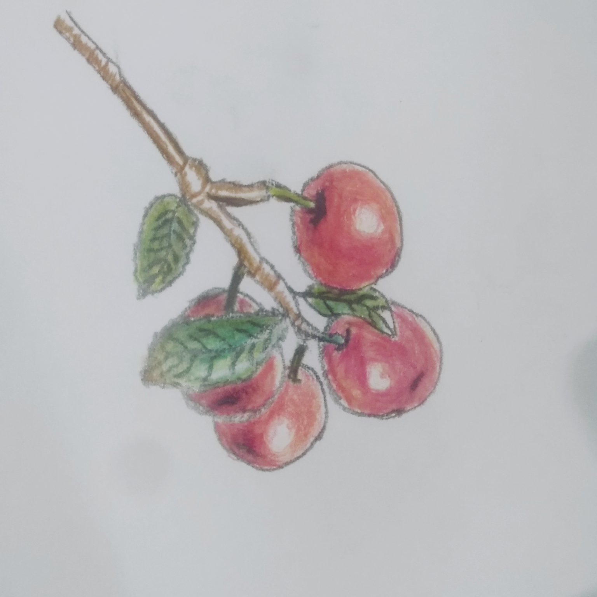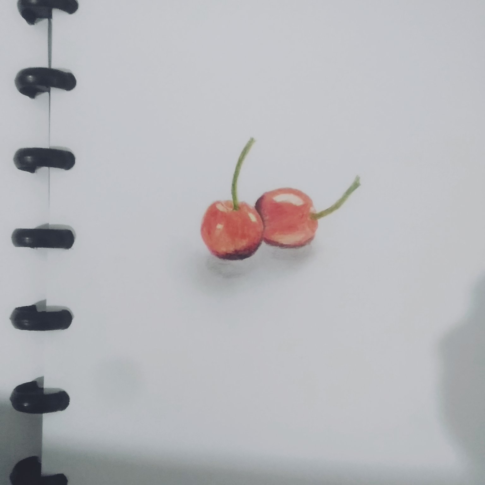
Ket:Gambar cherry(yang kiri gambar awal sedangkan yang kanan kemajuan mewarnainya?)
Terinspirasi dari:buah cherry(wkwkwk)
Alat yang digunakan:Pensil warna, Kertas, Pensil 2B?)
2. Halloween cartoon(?)

Ket:gambar hantu versi imut(?) tapi blm jadi...
Terinspirasi dari: piikiran ku(?)
Alat yang digunakan:pensil 2B, Kertas, pulpen
3. Lines
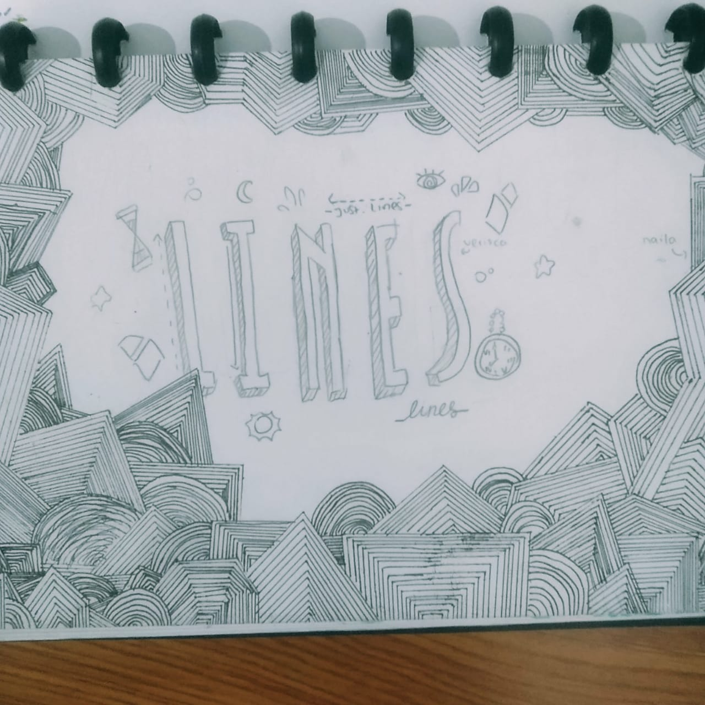
Ket:line doodling with my friend~
Terinspirasi dari:-(lupa)
Alat yang digunakan: Pencil, pulpen, penggaris, kesabaran(?)
>
4. Flowers
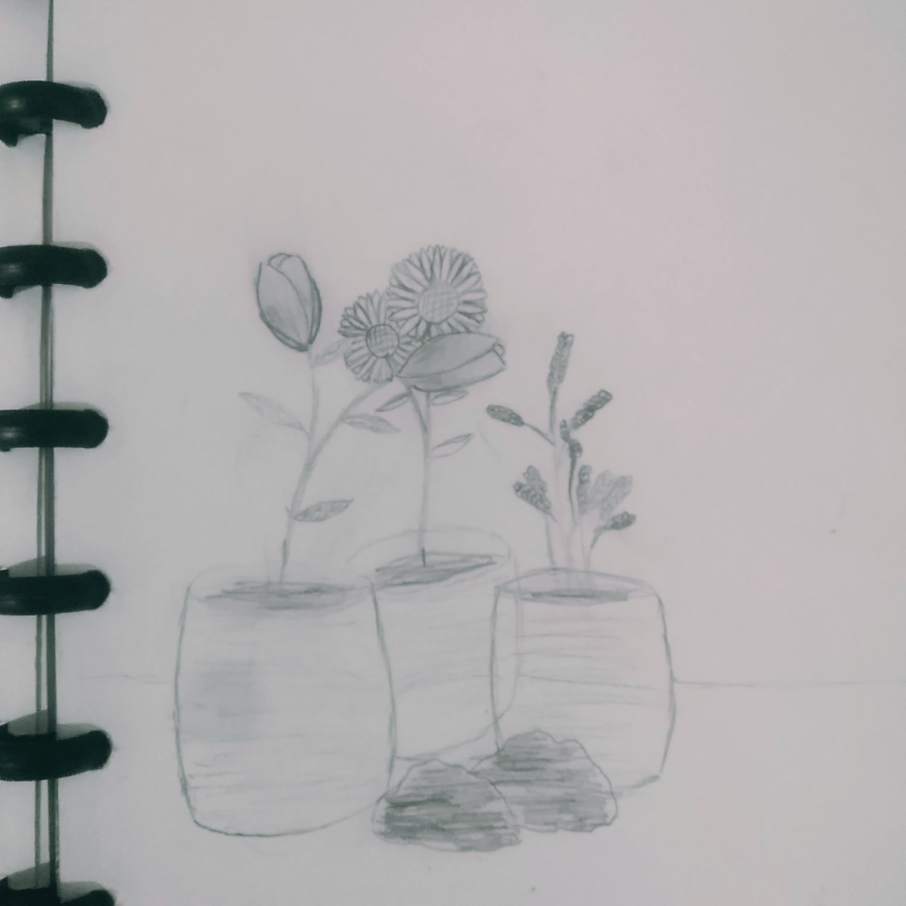
Ket:gambar bunga beserta pot nya?
Terinspirasi dari:-
Alat yang digunakan:pensil 2B, kertas
5. sketsa Mawar
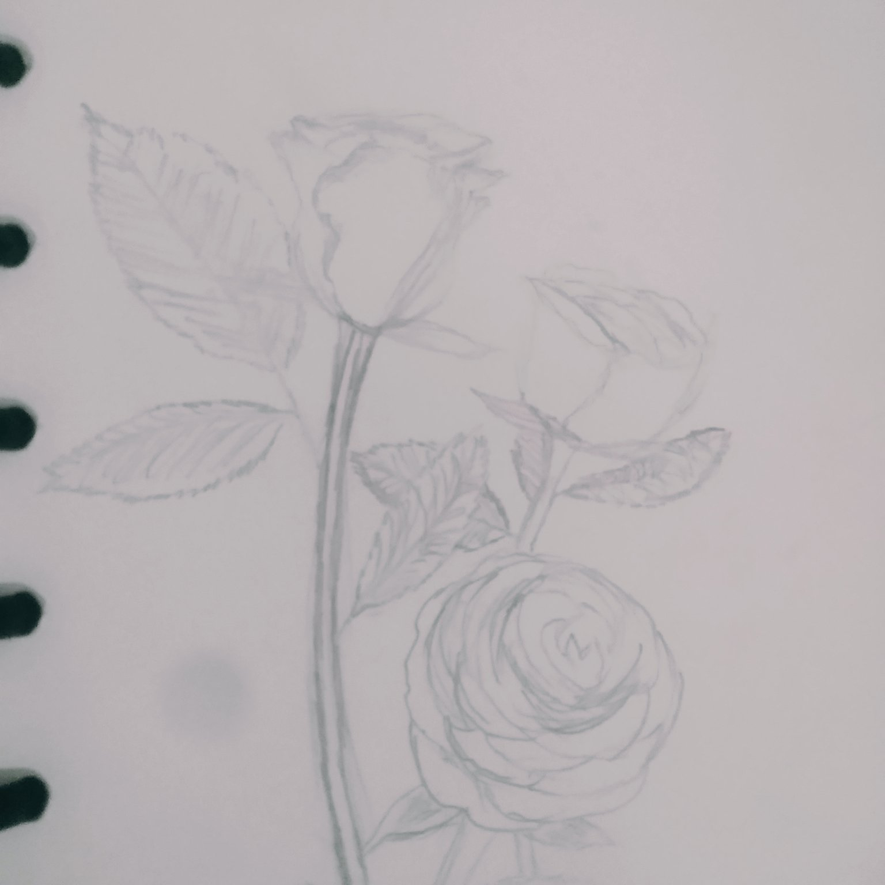
Ket:-
Terinspirasi dari:-
Alat yang digunakan:Pensil, kertas
6. injured
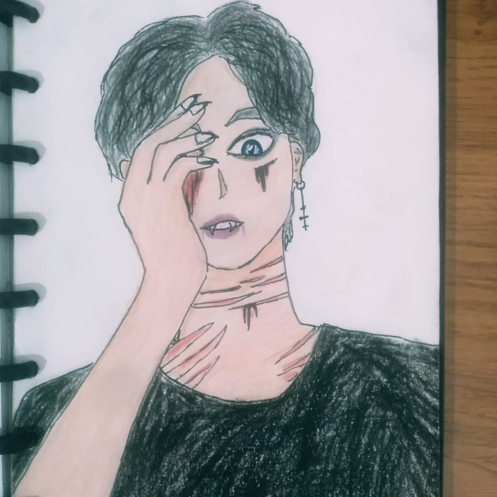
Ket:-
Terinspirasi dari:-
Alat yang digunakan:Pensil warna, pensil 2B, pulpen, kertas
7. Just Smile:)

8. belum ada judulnya
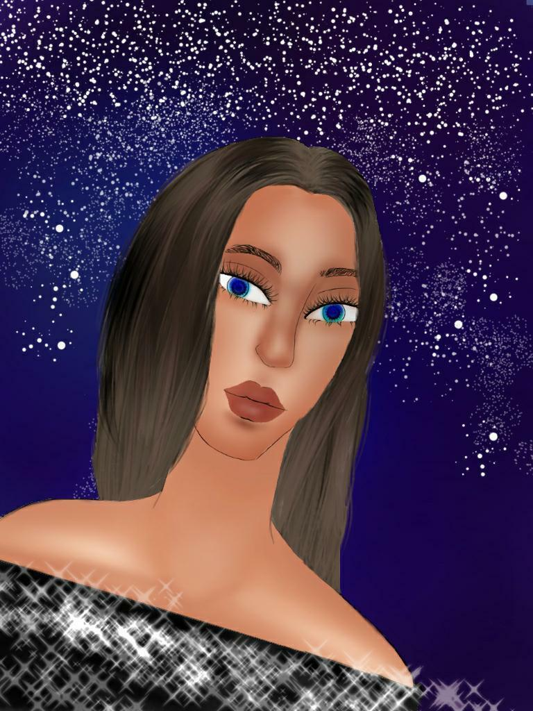
Ket: My first realistic(?) digital drawing
Terinspirasi dari:-
Aplikasi yang digunakan:Ibis Paint X
9. tanpa judul
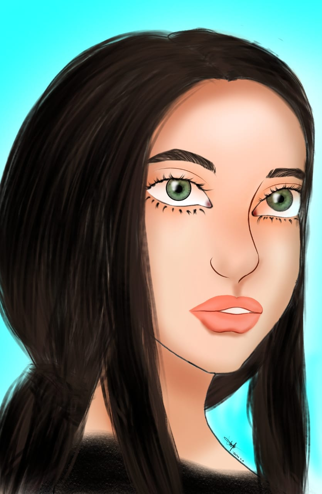
Ket: digital drawing
Terinspirasi dari:-
Aplikasi yang digunakan:Ibis Paint X
My Painting:
1.Sunset
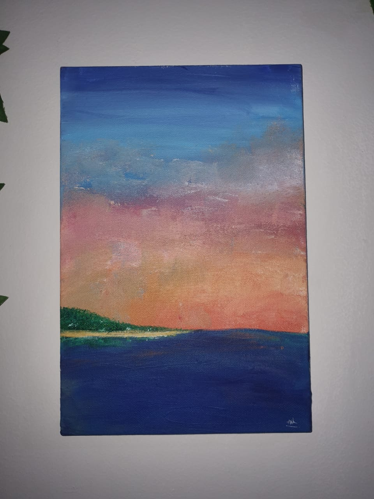
Ket:Lukisan kanvas pertama
Terinspirasi dari: Pemandangan sunset(?)
Alat yang digunakan:Cat acrylic, Kuas, Kanvas
2. Galaxy
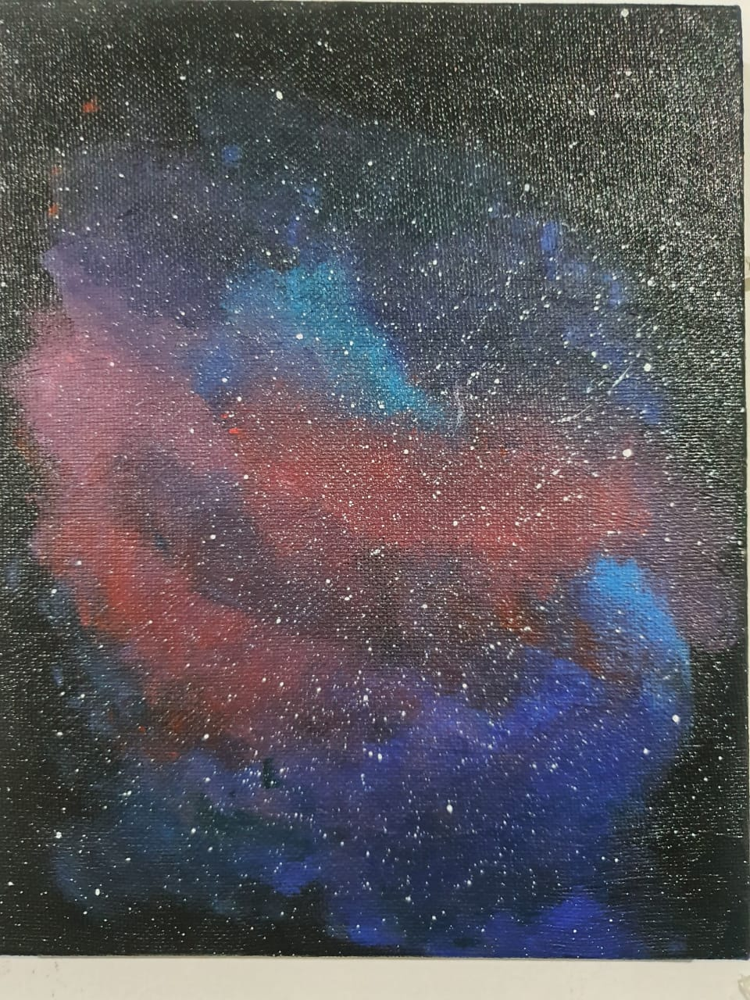
Ket:-
Terinspirasi dari:Google(?)
Alat yang digunakan:Cat acrylic, cat air, kuas, kanvas
3. Amed
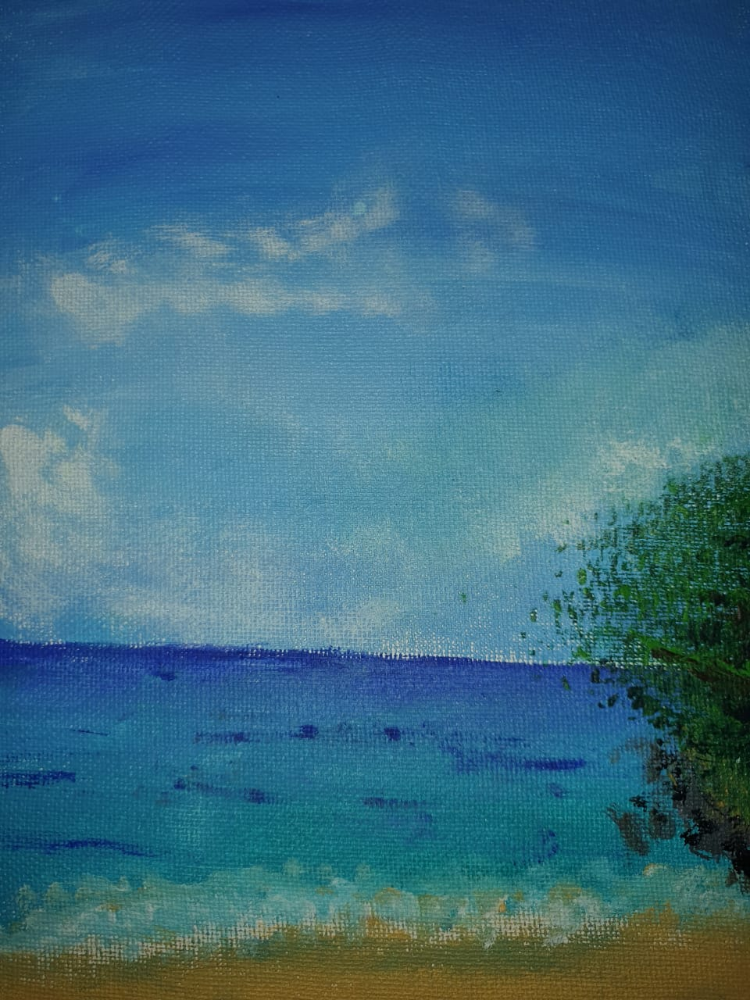
Ket:-
Terinspirasi dari:Pantai Amed
Alat yang digunakan:Cat acrylic, sedikit cat air, kuas, kanvas